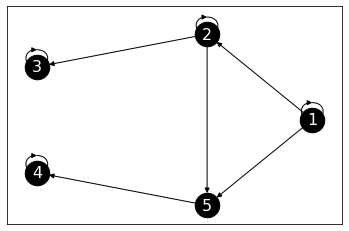

\(\newcommand{\P}{\mathbb{P}}\) \(\newcommand{\E}{\mathbb{E}}\) \(\newcommand{\S}{\mathcal{S}}\) \(\newcommand{\indep}{\perp\!\!\!\perp}\) \(\newcommand{\bmu}{\boldsymbol{\mu}}\) \(\newcommand{\bpi}{\boldsymbol{\pi}}\)
5.4. Limit behavior#
We continue our exploration of basic Markov chain theory. In this section, we consider the long-term behavior of a chain. As we did in the previous section, we restrict ourselves to finite-space discrete-time Markov chains that are also time-homogeneous.
5.4.1. Stationary distributions#
An important property of Markov chains is that, when run for long enough, they converge to a sort of “equilibrium.” We develop parts of this theory here. What do we mean by “equilibrium”? Here is the key definition.
DEFINITION (Stationary Distribution) Let \((X_t)_{t \geq 0}\) be a Markov chain on \(\mathcal{S} = [n]\) with transition matrix \(P = (p_{i,j})_{i,j=1}^n\). A probability distribution \(\bpi = (\pi_i)_{i=1}^n\) over \([n]\) is a stationary distribution of \((X_t)_{t \geq 0}\) (or of \(P\)) if:
\(\natural\)
In matrix form, this condition can be stated as
where recall that we think of \(\bpi\) as a row vector. One way to put this is that \(\bpi\) is a fixed point of \(P\) (through multiplication from the left). Another way to put it is that \(\bpi\) is a left (row) eigenvector of \(P\) with eigenvalue \(1\).
To see why a stationary distribution is indeed an equilibrium, we note the following.
LEMMA (Stationarity) Let \(\mathbf{z} \in \mathbb{R}^n\) be a left eigenvector of transition matrix \(P \in \mathbb{R}^{n \times n}\) with eigenvalue \(1\). Then \(\mathbf{z} P^s = \mathbf{z}\) for all integers \(s \geq 0\). \(\flat\)
Proof: Indeed,
\(\square\)
Suppose the initial distribution is equal to a stationary distribution \(\bpi\). Then, from the Time Marginals Theorem and the Stationarity Lemma, the distribution at any time \(s \geq 1\) is
That is, the distribution at all times indeed remains stationary.
In the next section we will derive a remarkable fact: under certain conditions, a Markov chain started from an arbitrary initial distribution converges in the limit of \(t \to +\infty\) to a stationary distribution.
EXAMPLE: (Weather Model, continued) Going back to the Weather Model, we compute a stationary distribution. We need \(\bpi = (\pi_1, \pi_2)\) to satisfy
that is,
You can check that, after rearranging, these two equations are in fact the same one.
Note, however, that we have some further restrictions: \(\bpi\) is a probability distribution. So \(\pi_1, \pi_2 \geq 0\) and \(\pi_1 + \pi_2 = 1\). Replacing the latter in the first equation we get
so that we require
And \(\pi_2 = 1 - \pi_1 = 1/2\). The second equation above is also automatically satisfied (Why?). \(\lhd\)
The previous example is quite special. It generalizes to all doubly stochastic matrices (including the Random Walk on the Petersen Graph for instance). Indeed, we claim that the uniform distribution is always a stationary distribution in the doubly stochastic case. Let \(P = (p_{i,j})_{i,j=1}^n\) be doubly stochastic over \([n]\) and let \(\bpi = (\pi_i)_{i=1}^n\) be the uniform distribution on \([n]\). Then for all \(j \in [n]\)
because the columns sum to \(1\). That proves the claim.
Is a stationary distribution guaranteed to exist? Is it unique? To answer this question, we first need to some graph-theoretic concepts relevant to the long-term behavior of the chain.
DEFINITION (\(x \to y\)) A state \(x \in \S\) is said to communicate with a state \(y \in \S\) if there exists a sequence of states \(z_0 = x, z_1, z_2, \ldots, z_{r-1}, z_r = y\) such that for all \(\ell = 1,\ldots,r\)
We denote this property as \(x \to y\). \(\natural\)
In terms of the transition graph of the chain, the condition \(x \to y\) says that there exists a directed path from \(x\) to \(y\). It is important to see the difference between: (1) the existence of a direct edge from \(x\) to \(y\) (which implies \(x \to y\) but is not necessary) and (2) the existence of a directed path from \(x\) to \(y\). See the next example.
EXAMPLE: (Robot Vacuum, continued) Going back to the Robot Vacuum Example, recall the transition graph above.
P_robot = np.array([
[0, 0.8, 0, 0.2, 0, 0, 0, 0, 0],
[0.3, 0, 0.2, 0, 0, 0.5, 0, 0, 0],
[0, 0.6, 0, 0, 0, 0.4, 0, 0, 0],
[0.1, 0.1, 0, 0, 0.8, 0, 0, 0, 0],
[0, 0, 0, 0.25, 0, 0, 0.75, 0, 0],
[0, 0.15, 0.15, 0, 0, 0, 0, 0.35, 0.35],
[0, 0, 0, 0, 0, 0, 0, 1, 0],
[0, 0, 0, 0, 0.3, 0.4, 0.2, 0, 0.1],
[0, 0, 0, 0, 0, 1, 0, 0, 0]
]
)
G_robot = nx.from_numpy_array(P_robot, create_using=nx.DiGraph)
n_robot = P_robot.shape[0]
Show code cell source
nx.draw_networkx(G_robot, pos=nx.circular_layout(G_robot),
labels={i: i+1 for i in range(n_robot)},
node_size=600, node_color='black', font_size=16, font_color='white',
connectionstyle='arc3, rad = 0.2')

While there is no direct edge from \(4\) to \(3\), we do have \(4 \to 3\) through the path \((4,2), (2,3)\). Do we have \(3 \to 4\)?
\(\lhd\)
Here is an important consequence of this graph-theoretic notion on the long-term behavior of the chain.
LEMMA (Communication) If \(x \to y\), then there is an integer \(r \geq 1\) such that
\(\flat\)
Proof idea: We lower bound the probability in the statement with the probability of visiting the particular sequence of states in the definition of \(x \to y\).
Proof: By definition of \(x \to y\), there exists a sequence of states \(z_0 = x, z_1, z_2, \ldots, z_{r-1}, z_r = y\) such that, for all \(\ell = 1,\ldots,r\), \(p_{z_{\ell-1},z_\ell} > 0\). Hence,
as claimed. \(\square\)
The following example shows that the probability in the lemma is positive, but may not be \(1\). It also gives some insights about the question of the uniqueness of the stationary distribution.
EXAMPLE: (Two Sinks) Consider the following random walk on a digraph.
G_sinks = nx.DiGraph()
for i in range(5):
G_sinks.add_node(i)
G_sinks.add_edge(0, 0, weight=1/3)
G_sinks.add_edge(0, 1, weight=1/3)
G_sinks.add_edge(1, 1, weight=1/3)
G_sinks.add_edge(1, 2, weight=1/3)
G_sinks.add_edge(2, 2, weight=1)
G_sinks.add_edge(3, 3, weight=1)
G_sinks.add_edge(0, 4, weight=1/3)
G_sinks.add_edge(1, 4, weight=1/3)
G_sinks.add_edge(4, 3, weight=1)
Show code cell source
nx.draw_networkx(G_sinks, pos=nx.circular_layout(G_sinks),
labels={i: i+1 for i in range(5)},
node_size=600, node_color='black', font_size=16, font_color='white')

Here we have \(1 \to 4\) (Why?). The Communication Lemma implies that, when started at \(1\), \((X_t)_{t \geq 0}\) visits \(4\) with positive probability. But that probability is not one. Indeed we also have \(1 \to 3\) (Why?), so there is a positive probability of visiting \(3\) as well. But if we do so before visiting \(4\), we stay at \(3\) forever hence cannot subsequently reach \(4\).
In fact, intuitively, if we run this chain long enough we will either get stuck at \(3\) or get stuck at \(4\). These give rise to different stationary distributions. The transition probability is the following.
P_sinks = nx.adjacency_matrix(G_sinks).toarray()
print(P_sinks)
[[0.33333333 0.33333333 0. 0. 0.33333333]
[0. 0.33333333 0.33333333 0. 0.33333333]
[0. 0. 1. 0. 0. ]
[0. 0. 0. 1. 0. ]
[0. 0. 0. 1. 0. ]]
It is easy to check that \(\bpi = (0,0,1,0,0)\) and \(\bpi' = (0,0,0,1,0)\) are both stationary distributions.
pi = np.array([0.,0.,1.,0.,0.])
pi_prime = np.array([0.,0.,0.,1.,0.])
P_sinks.T @ pi.T
array([0., 0., 1., 0., 0.])
P_sinks.T @ pi_prime.T
array([0., 0., 0., 1., 0.])
In fact, there are infinitely many stationary distributions in this case.
\(\lhd\)
To avoid the behavior in the previous example, we introduce the following assumption.
DEFINITION (Irreducibility) A Markov chain on \(\mathcal{S}\) is irreducible if for all \(x, y \in \mathcal{S}\) with \(x \neq y\) we have \(x \to y\) and \(y \to x\). We also refer to the transition matrix as irreducible in that case. \(\natural\)
In graphical terms, a Markov chain is irreducible if and only if its transition graph is strongly connected.
EXAMPLE: (Robot Vacuum and Two Sinks, continued) Because irreducibility is ultimately a graph-theoretic property, it is easy to check using NetworkX. For this, we use the function is_strongly_connected(). Consider again the Robot Vacuum Example. This one turns out to be irreducible:
print(nx.is_strongly_connected(G_robot))
True
The Two Sinks Example, on the other hand, is not:
print(nx.is_strongly_connected(G_sinks))
False
\(\lhd\)
In the irreducible case, it turns out that a stationary distribution always exists - and is in fact unique. (The presence of a single strongly connected component suffices for uniqueness to hold in this case, but we will not derive this here. Also, in the finite case, a stationary distribution always exists, but again we will not prove this here.) The proof of the following theorem is in an optional section below.
THEOREM (Existence of Stationary Distribution) Let \(P\) be an irreducible transition matrix on \([n]\). Then there exists a unique stationary distribution \(\bpi\). Further all entries of \(\bpi\) are strictly positive. \(\sharp\)
NUMERICAL CORNER: In general, computing stationary distributions is not as straigthforward as in the simple example we considered above. We conclude this section with some numerical recipes.
Going back to the Robot Vacuum, finding a solution to \(\bpi P =\bpi\) in this case is not obvious. One way to do this is to note that, taking transposes, this condition is equivalent to \(P^T \bpi^T = \bpi^T\). That is, \(\bpi^T\) is an eigenvector of \(P^T\) with eigenvalue \(1\). (Or, as we noted previously, the row vector \(\bpi\) is a left eigenvector of \(P\) with eigenvalue \(1\).) It must also satisfy \(\bpi \geq 0\) with at least one entry non-zero. Here, we use NumPy.
w, v = LA.eig(P_robot.T)
The first eigenvalue is approximately \(1\), as seen below.
print(w)
[ 1. +0.j 0.67955052+0.j 0.50519638+0.j
-0.70014828+0.j -0.59989603+0.j -0.47710224+0.32524037j
-0.47710224-0.32524037j 0.03475095+0.04000569j 0.03475095-0.04000569j]
The corresponding eigenvector is approximately non-negative.
print(v[:,0])
[0.08933591+0.j 0.27513917+0.j 0.15744007+0.j 0.06794162+0.j
0.20029774+0.j 0.68274825+0.j 0.24751961+0.j 0.48648149+0.j
0.28761004+0.j]
To obtain a stationary distribution, we remove the imaginary part and normalize it to sum to \(1\).
pi_robot = np.real(v[:,0]) / np.sum(np.real(v[:,0]))
print(pi_robot)
[0.03581295 0.11029771 0.06311453 0.02723642 0.0802953 0.27369992
0.09922559 0.19502056 0.11529703]
Alternatively, we can solve the linear system
It turns out that the last equation is a linear combination over the other equations (see Exercise 3.48), so we remove it and replace it instead with the condition \(\sum_{i=1}^n \pi_i = 1\).
The left-hand side of the resulting linear system is (after taking the transpose to work with column vectors):
A = np.copy(P_robot.T) - np.diag(np.ones(n_robot))
A[n_robot-1,:] = np.ones(n_robot)
print(A)
[[-1. 0.3 0. 0.1 0. 0. 0. 0. 0. ]
[ 0.8 -1. 0.6 0.1 0. 0.15 0. 0. 0. ]
[ 0. 0.2 -1. 0. 0. 0.15 0. 0. 0. ]
[ 0.2 0. 0. -1. 0.25 0. 0. 0. 0. ]
[ 0. 0. 0. 0.8 -1. 0. 0. 0.3 0. ]
[ 0. 0.5 0.4 0. 0. -1. 0. 0.4 1. ]
[ 0. 0. 0. 0. 0.75 0. -1. 0.2 0. ]
[ 0. 0. 0. 0. 0. 0.35 1. -1. 0. ]
[ 1. 1. 1. 1. 1. 1. 1. 1. 1. ]]
The right-hand side of the resulting linear system is:
b = np.concatenate((np.zeros(n_robot-1),[1.]))
print(b)
[0. 0. 0. 0. 0. 0. 0. 0. 1.]
We solve the linear system using numpy.linalg.solve().
pi_robot_solve = LA.solve(A,b)
print(pi_robot_solve)
[0.03581295 0.11029771 0.06311453 0.02723642 0.0802953 0.27369992
0.09922559 0.19502056 0.11529703]
This last approach is known as “Replace an Equation”.
\(\lhd\)
5.4.2. Convergence to equilibrium#
Now that we have established the existence and uniqueness of a stationary distribution (at least in the irreducible case), it remains to justify its relevance. As we indicated before, the fixed-point nature of the stationary distribution definition suggests that it arises as a limit of repeatedly applying \(P\). Indeed it can be shown that, starting from any distribution, the state distribution at time \(t\) converges to the stationary distribution as \(t \to +\infty\) - under an additional assumption.
The additional assumption involves issues of periodicity. The following example will suffice to illustrate.
EXAMPLE: (A Periodic Chain) Consider a two-state Markov chain with transition probability
Note that this chain is irreducible. Its unique stationary distribution is \(\bpi = (1/2, 1/2)\) since indeed
We compute the distribution at time \(t\), started from state \(1\). That is,
Then
and so on.
In general, by induction,
Clearly the distribution is not converging. Note however that the time average does
\(\lhd\)
We will need the following definition.
DEFINITION (Aperiodic) Let \((X_t)_{t \geq 0}\) be a Markov chain over a finite state space \(\mathcal{S}\). We say that state \(i \in \mathcal{S}\) is aperiodic if
for all sufficiently large \(t\). A chain is aperiodic if all its states are. \(\natural\)
EXAMPLE: (A Periodic Chain, continued) Going back the two-state chain above, we note that neither state is aperiodic. For state \(1\), we have shown that
for all \(t\) odd. \(\lhd\)
We will not need to explore this definition in great details here. Instead we give a simple sufficient condition that is typically good enough for data science applications.
DEFINITION (Weakly Lazy Chain) We say that a Markov chain \((X_t)_{t \geq 0}\) is weakly lazy if every state \(i\) satisfies
Put differently, all entries on the diagonal of the transition matrix are strictly positive. \(\natural\)
We check that a weakly lazy chain is necessarily aperiodic. For any state \(i \in \mathcal{S}\) and any \(t\)
by assumption. In words, the probability of being at \(i\) at time \(t\) given that we started at \(i\) is at least the probability that we never left.
We are ready to state two key theorems.
First, the Convergence to Equilibrium Theorem applies to irreducible and aperiodic chains. Such chains have a unique stationary distribution. The theorem says that, started from any initial distribution, the distribution at time \(t\) converges to the stationary distribution as \(t \to +\infty\).
THEOREM (Convergence to Equilibrium) Let \((X_t)_{t\geq 0}\) be an irreducible and aperiodic Markov chain with unique stationary distribution \(\bpi\). Then for any initial distribution \(\bmu\) and any state \(i\)
as \(t \to +\infty\). \(\sharp\)
Put differently, this theorem should look familiar. Using the formula \((\bmu P^t)_i\) for the probability that the state is \(i\) at time \(t\), we can rephrase the theorem in matrix form as
as \(t \to +\infty\). This is highly reminiscent of the Power Iteration Lemma. Here repeated multiplication \(P\) starting from an arbitrary distribution converges to \(\bpi\), which recall is a left eigenvector of \(P\) with eigenvalue \(1\). (Unlike the Power Iteration Lemma, there is no need to normalize here. This is because we implicitly work with the \(\ell_1\)-norm and \(P\) is stochastic.)
Second, the Ergodic Theorem applies to irreducible (but not necessarily aperiodic) chains. Again such have a unique stationary distribution. The theorem says that, started from any initial distribution, the frequency of visits to any state \(i\) converges to the stationary distribution. Below, we use the notation \(\mathbf{1}[X_s = i]\) which is \(1\) when \(X_s = i\) and \(0\) otherwise.
THEOREM (Ergodic Theorem) Let \((X_t)_{t\geq 0}\) be an irreducible Markov chain with unique stationary distribution \(\bpi\). Then for any initial distribution \(\bmu\) and any state \(i\)
as \(t \to +\infty\). \(\sharp\)
Above, \(\sum_{s = 0}^t \mathbf{1}[X_s = i]\) is the number of visits to \(i\) up to time \(t\).
Note that neither of these two theorems immediately implies the other. They are both useful in their own way.
NUMERICAL CORNER: The Convergence to Equilibrium Theorem implies that we can use power iteration to compute the unique stationary diistribution in the irreducible case. We revisit the Robot Vaccum Example. We initialize with the uniform distribution, then repeatedly multiply by \(P\).
mu = np.ones(n_robot)/n_robot
print(mu)
[0.11111111 0.11111111 0.11111111 0.11111111 0.11111111 0.11111111
0.11111111 0.11111111 0.11111111]
mu = mu @ P_robot
print(mu)
[0.04444444 0.18333333 0.03888889 0.05 0.12222222 0.25555556
0.10555556 0.15 0.05 ]
mu = mu @ P_robot
print(mu)
[0.06 0.10222222 0.075 0.03944444 0.085 0.21722222
0.12166667 0.195 0.10444444]
We repeat, say, \(10\) more times and compare to the truth pi_robot.
for _ in range(10):
mu = mu @ P_robot
print(mu)
[0.0358112 0.10982018 0.06297235 0.02721311 0.08055026 0.27393441
0.09944157 0.19521946 0.11503747]
print(pi_robot)
[0.03581295 0.11029771 0.06311453 0.02723642 0.0802953 0.27369992
0.09922559 0.19502056 0.11529703]
We see that a small number of iterations sufficed to get an accurate answer. In general, the speed of convergence depends on the eigenvalues of \(P\) that are strictly smaller than \(1\) in absolute value. We will derive this type of result in a special case in the next section.
We can also check the Ergodic Theorem through simulation. We generate a long sample path and compare the state visit frequencies to pi_robot.
mu = np.ones(n_robot) / n_robot
path_length = 10000
visit_freq = np.zeros(n_robot) # initialization of number of visits
path = mmids.SamplePath(mu, P_robot, path_length)
for i in range(n_robot):
visit_freq[i] = np.count_nonzero(path == i+1)/(path_length+1)
print(visit_freq)
[0.03749625 0.11008899 0.06449355 0.03159684 0.08449155 0.26747325
0.09999 0.19728027 0.10708929]
print(pi_robot)
[0.03581295 0.11029771 0.06311453 0.02723642 0.0802953 0.27369992
0.09922559 0.19502056 0.11529703]
\(\lhd\)